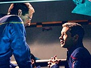
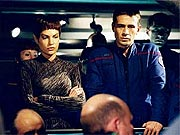
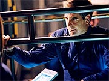

|
MANCHETE
DO EPISDIO
Histria
sem complicaes consegue
capturar o verdadeiro esprito da srie
Episdio
anterior | Prximo
episdio
Sinopse:
Archer est prestes a comandar uma expedio a um planeta desabitado quando a Enterprise contatada por um trio de aliengenas. Eles pedem abrigo a bordo da nave para se protegerem de uma tempestade neutrnica que est se aproximando daquela regio, viajando em dobra. Eles instruem o capito a partir em dobra sete, assim que eles estiverem a bordo, mas so informados de que a velocidade mxima da Enterprise dobra cinco.
Enquanto os trs vm a bordo, os sensores da nave confirmam a aproximao da tempestade. Com alguns ajustes, a nave poder permanecer intacta viajando pelo fenmeno. Mas os tripulantes, informa Phlox, seriam mortos em poucos minutos, expostos radiao. Ele diz que a enfermaria o local mais protegido da nave e poderia abrigar parte da tripulao, mas Archer aponta que no seria possvel colocar todos os 83 tripulantes l.
 Trip ento apresenta uma soluo alternativa: todos podem se abrigar na "passarela", um enorme condute ultra-protegido localizado nas naceles da nave. Seria necessrio apenas desligar os motores de dobra, que tornam o corredor inabitvel, a 300 graus Celsius, e instalar a tripulao ali. Archer pede que o engenheiro e Mayweather estabeleam um centro de comando provisrio na passarela, e pede que T'Pol cuide dos procedimentos de evacuao.
Os trs aliengenas so ento recebidos pelo capito. Eles dizem ser cartgrafos estelares, e Archer sugere que, depois de superada a tempestade, eles poderiam ajudar na atualizao das cartas da Enterprise. Um pouco hesitantes, eles concordam.
A tripulao ento inicia os procedimentos de evacuao para a passarela. Os sistemas so todos desligados e a equipe da Enterprise prepara-se para morar naquele estreito corredor pelos prximos dias. Phlox tem problemas inicialmente, pois suas criaturas no caberiam todas no espao designado. T'Pol, entretanto, consegue acomodar as necessidades do mdico.
J na passarela, alguns tripulantes tm alguma dificuldade para se adaptar: Malcolm passa a sentir enjos, Hoshi se incomoda com o ambiente claustrofbico e assim por diante; mas ningum parece mais infeliz que Trip, que est localizado prximo aos trs aliengenas.
Ele expressa ao capito seu descontentamento com o trio, que faz estranhos rituais e chega at a cozinhar, sem autorizao, numa chapa quente. Trip fica muito irritado com a antipatia dos aliengenas, at que chamado ao centro de comando, onde um painel indica que o sistema de antimatria da engenharia foi ativado. Ele em princpio acha que um engano dos painis, mas quando o sistema de matria tambm ligado, fica claro que o problema est de fato ocorrendo -- algum precisa ir engenharia.
Trip fica encarregado da misso; com o traje espacial, ele tem apenas 22 minutos antes de sucumbir radiao. Ele parte, mas, quando chega engenharia, descobre que h aliengenas a bordo. Por um monitor, ele verifica que os invasores esto por toda parte -- e so da mesma espcie do trio que est se abrigando na passarela!
Ele volta ao abrigo da tripulao e comunica a Archer suas descobertas. O capito parte ento para cima dos supostos cartgrafos, querendo saber o que eles sabem. Os trs dizem ser fugitivos, desertores do exrcito de seu mundo, que se tornou corrupto e agressivo. Ele garante que os invasores no ficaro satisfeitos apenas recuperando-os, mas tambm levaro a Enterprise com eles.
Os temores se confirmam quando os motores da nave so reativados -- a tripulao tem apenas 20 minutos para deslig-los antes que todos sejam queimados na passarela. Archer, Malcolm e T'Pol decidem voltar nave com seus trajes espaciais. Os dois ltimos teriam por misso desativar o motor de dobra, enquanto Archer contataria o capito aliengena e ordenaria que ele sasse da nave -- caso contrrio, ele a destruiria.
 O aliengena, obviamente, no responde ameaa de Archer, que instrui Mayweather a pilotar a Enterprise para uma turbulncia neutrnica que destruiria a nave. Enquanto isso, T'Pol e Reed conseguem desativar o motor de dobra, salvando a tripulao. Vendo sua destruio iminente, os aliengenas decidem partir em sua nave, que estava ancorada ao lado da Enterprise.
Com o controle retomado, a Enterprise navega com segurana at sair da tempestade, quando todos podem voltar a seus alojamentos e Archer pode desejar boa sorte aos trs fugitivos aliengenas.
Comentrios:
"The Catwalk" um episdio que, desde a premissa, tinha tudo para dar errado. E, no entanto, quando os crditos j esto rolando, voc percebe que acabou de ver uma slida hora de
Enterprise.
O termo "slida" no foi escolhido em vo. Ele denota a consistncia desse episdio em particular com a premissa da srie. Semana aps semana, temos visto simples reciclagens de premissas j realizadas em outras sries, sem ao menos um pingo de vida prpria (cito
"Precious Cargo", s para ficar com o exemplo mais prximo). Aqui, no temos nenhuma novidade em termos de premissa bsica, mas vemos uma quantidade suficiente de elementos capazes de adaptar a histria ao contexto do sculo 22 com sucesso.
Em outras palavras, a idia de que "a nave est para ser tomada por aliengenas" j foi executada uma dzia de vezes, pelo menos. Mas em nenhuma delas vimos esse tema to atrelado precariedade tecnolgica desta primeira nave de longo alcance da Terra. Aqui, a nave no tem nem a capacidade de proteger sua tripulao da radiao de uma tempestade neutrnica -- um fenmeno natural, at onde podemos entend-lo.
Essa pequena modificao j serve como variao suficiente sobre o mesmo tema para torn-lo novo para a audincia. Mas ela no garante o sucesso do episdio. O que faz de
"The Catwalk" um segmento realmente bem-sucedido o enfoque que dado histria: os personagens.
Raras vezes o trabalho com os personagens flui com tamanha naturalidade e qualidade como aconteceu aqui. Vemos um Archer verdadeiramente preocupado com sua tripulao, capaz de acolher seus tripulantes e entender a dificuldade da situao pelas quais eles esto passando. Finalmente vemos o capito ter uma atitude paterna, no bom sentido, para com seus comandados. E funciona.
Alm disso, tambm vemos aquele capito explosivo e ativo, que nasceu em
"Broken Bow" e acabou diludo nos episdios posteriores, voltando vida. A cena em que ele interroga agressivamente o trio aliengena funciona muito bem para trazer aquela velha chama ao capito.
Os demais personagens tambm tm os seus momentos. Phlox mostra sua sensibilidade para com seus animais da enfermaria, T'Pol decide que precisa aprender a confraternizar com a tripulao (e a cena em que ela faz isso, durante a exibio do filme, maravilhosamente bem bolada), Trip tem de encarar os antipticos aliengenas, Malcolm revisita seu enjo de mar com as chacoalhadas da Enterprise e Hoshi mais uma vez mostra sua simpatia por lugares apertados.
Mas uma meno honrosa deve ir para Mayweather! Finalmente os roteiristas de
Enterprise descobriram que o personagem existe e pode falar em situaes corriqueiras dos episdios. Foi uma boa idia coloc-lo para estabelecer o centro de comando, junto com Trip, e deix-lo participar um pouco dos dilogos e da histria. Esperemos que ele no volte a ser esquecido no futuro e que tenhamos mais do discreto Travis ainda nesta temporada.
 Ainda no mbito do roteiro, preciso dizer que realmente adoro o material que Michael Sussman e Phyllis Strong tm produzido ultimamente. Est cada vez mais claro que, de todos os roteiristas, eles so os maiores apreciadores da
Srie Clssica. Em seu ltimo episdio, o excelente "Dead
Stop", temos a Enterprise em contato com um cargueiro Telarita, raa s vista no seriado original. Aqui, em uma referncia ainda mais saborosa e discretas, descobrimo que Solkar (nada menos que o av de Sarek e bisav de Spock, conforme visto em
"Jornada nas Estrelas III: Procura de Spock") foi um embaixador Vulcano na Terra.
E os dois aproveitam para "canonizar" mais um elemento do episdio clssico da
Srie Animada, "Yesteryear", ao mencionar um velho ritual Vulcano de sobrevivncia no deserto, o Kahs-wan. De forma bastante inofensiva para os recm-chegados, a dupla sabe como agradar os fs da velha guarda. muito divertido caar referncias nesses episdios.
E como se o roteiro brilhantemente concebido de Sussman e Strong no fosse suficiente, a execuo do episdio tambm brilhante. Os atores regulares esto bem como de costume e Danny Goldring oferece uma atuao muito interessante como o capito aliengena, o grande vilo da histria.
As cenas de transferncia de tripulao para a passarela so todas muito bem executadas, ajudadas por uma msica incomumente marcante para um episdio de
Enterprise -- Jay Chattaway parece ter tido mais liberdade do que de costume para criar a trilha do episdio. As vrias cenas sem dilogos e a cobertura musical de Chattaway do uma textura interessante ao enredo. E os efeitos especiais continuam sendo um show parte na srie, e, ao que parece, melhoram a cada novo episdio.
Ao que parece, a escolha exata do foco do roteiro, sua redao precisa e competente, as atuaes de regulares e convidados, os grandes efeitos especiais, a direo interessante de Mike Vejar (especialmente nas cenas iniciais, que estabelecem a noo de espao da "passarela") e a msica mais afiada que o normal ajudam a estabeler
"The Catwalk", apesar da premissa batida, como um vencedor dessa fraca primeira metade da segunda temporada de
Enterprise.
Citaes:
Hoshi - "You're the captain, can't you order the storm to calm down a little?"
("Voc o capito, no pode ordenar tempestade que se acalme um pouco?")
Archer - "This is almost like going on a camping trip."
("Isso quase como uma viagem de acampamento.")
T'Pol - "Perhaps we can sing a few songs later."
("Talvez possamos cantar algumas canes depois.")
T'Pol - "I'm not skilled at fraternizing."
("No tenho talento para fraternizaes.")
Reed - "You knew we would be stuck in here for over a week, you might have given a little thought to making it tolerable!"
("Voc sabia que ficaramos presos aqui por uma semana, voc podia ter pensado um pouco em como tornar isso tolervel!")
Tucker - "I only had four hours, you're lucky you got a toilet!"
("Eu s tive quatro horas, voc tem sorte de haver um banheiro!")
Trivia:
 Scott Burkholder interpretou o comandante Hilliard em
"When it Rains...", de Deep Space Nine. Aaron Lustig apareceu como um mdico em
"Ex Post Facto", de
Voyager.
Scott Burkholder interpretou o comandante Hilliard em
"When it Rains...", de Deep Space Nine. Aaron Lustig apareceu como um mdico em
"Ex Post Facto", de
Voyager.
Elizabeth Magness apareceu em "Minefield", como uma tripulante ferida. Ela faz aqui a mesma personagem, embora ainda no tenha ganho um nome.
Danny Goldring interpretou o capito Nausicaano em "Fortunate
Son". Nas outras sries de Jornada, ele havia interpretado o legate Kell, em
"Civil Defense" (DS9), e Burke, em "Nor the Battle to the Strong"
(DS9). Ele tambm fez um Hirogen Alfa em "The Killing
Game", de Voyager.
Brian Cousins interpretou Parem em "The Next
Phase", de A Nova Gerao, e Crosis, um dos Borgs de
"Descent", tambm de A Nova Gerao.
As filmagens foram de 22 de outubro de 2003 a 1 de novembro.
Ficha
tcnica:
Escrito por Mike Sussman &
Phyllis Strong
Direo de Mike Vejar
Exibido em 18/12/2002
Produo:
038
Elenco:
Scott
Bakula como Jonathan Archer
Jolene Blalock como
T'Pol
John Billingsley
como Phlox
Anthony Montgomery
como Travis Mayweather
Connor Trinneer como
Charlie 'Trip' Tucker III
Dominic Keating como
Malcolm Reed
Linda Park como Hoshi Sato
Elenco convidado:
Scott Burkholder como Tagrim
Zach Grenier como Renth
Aaron Lustig como Guri
Elizabeth Magness como tripulante
Danny Goldring como capito aliengena
Brian Cousins como tenente aliengena
Sean Smith como tripulante aliengena
Episdio
anterior | Prximo
episdio
|